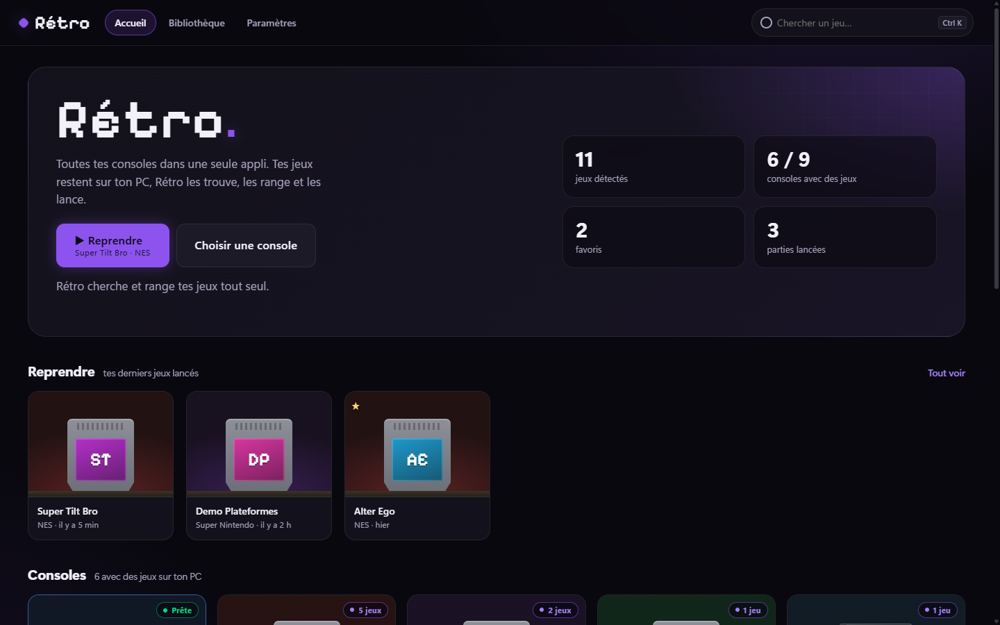
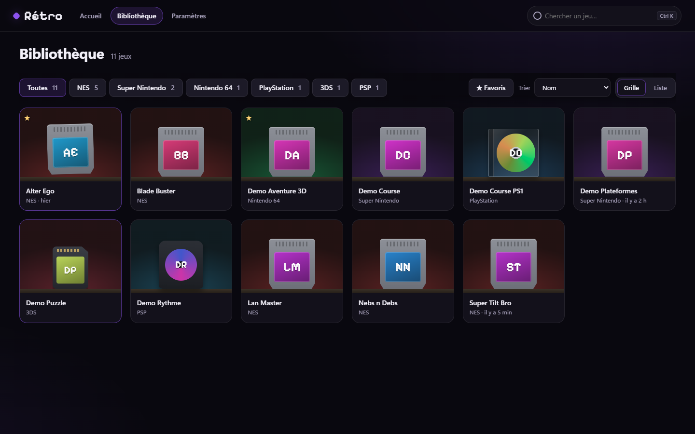
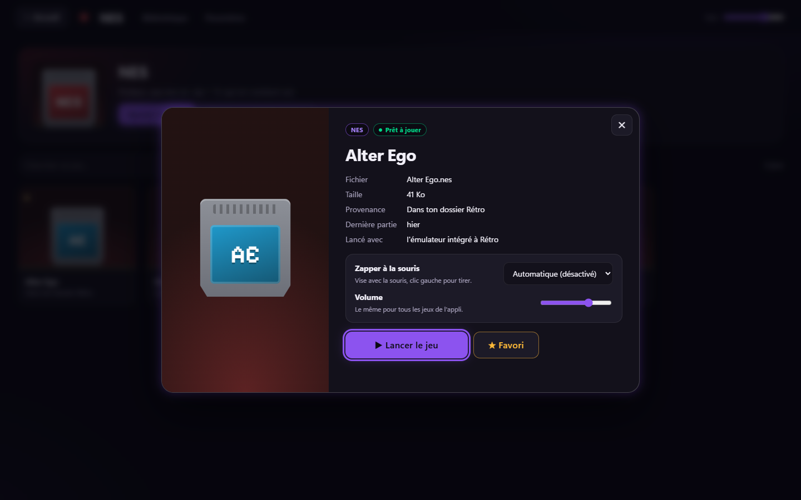
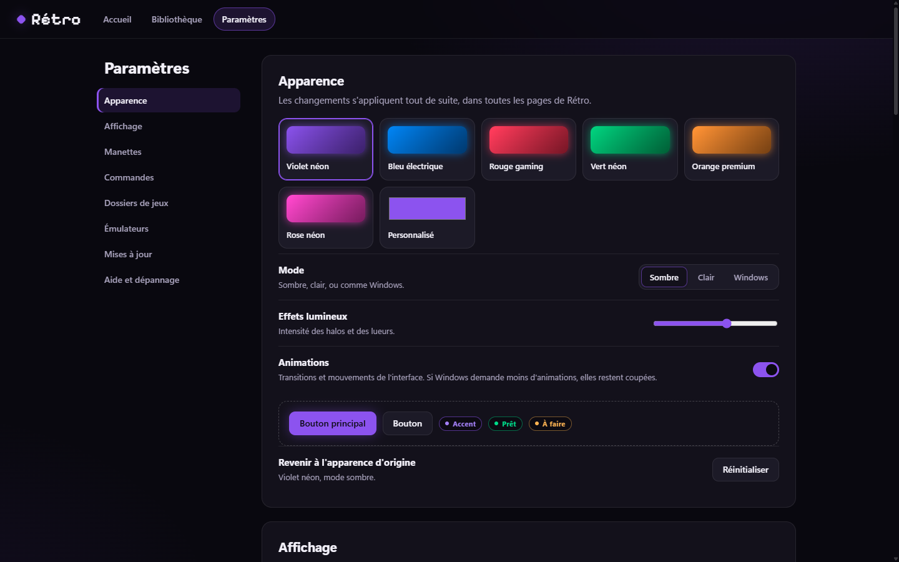
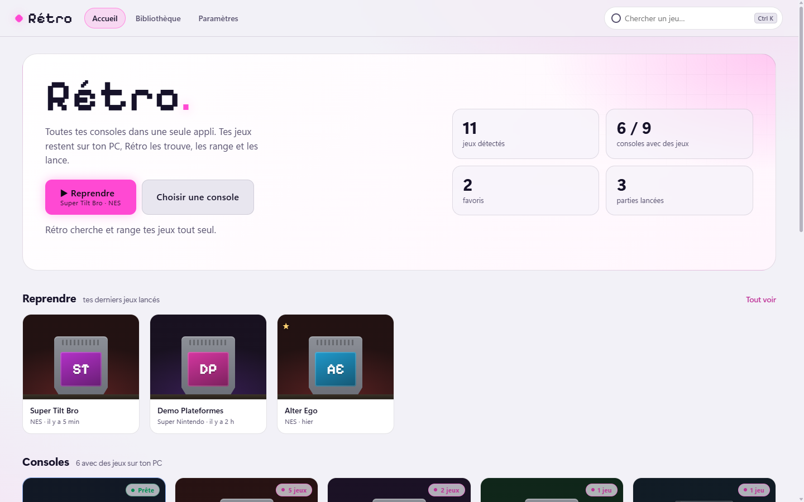
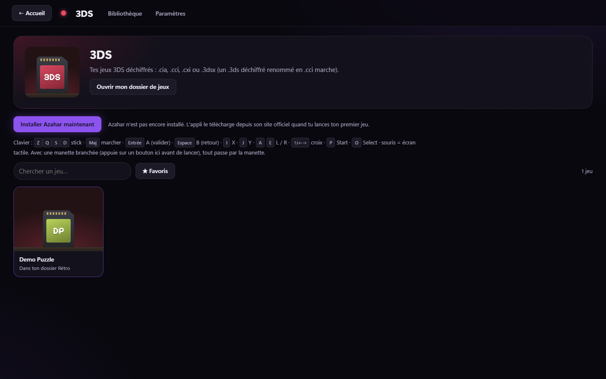
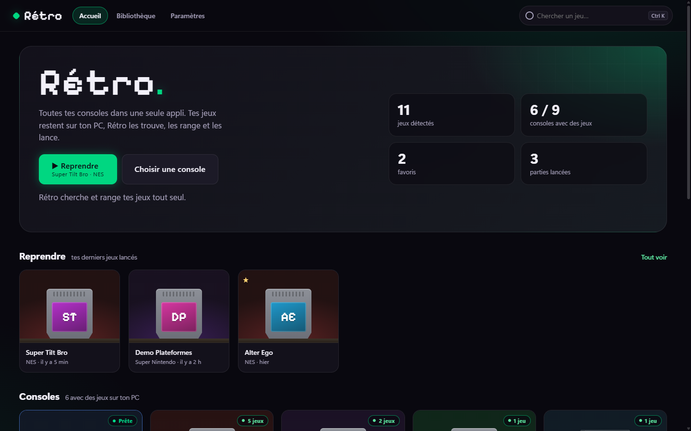

Recherche automatique
Rétro fouille tes dossiers habituels et tes autres disques, puis range chaque jeu dans sa console. Un jeu supprimé disparaît de la liste.
Toutes tes consoles. Une seule appli.
Rétro trouve les jeux déjà présents sur ton PC, les range par console avec leur jaquette et les lance en un clic, au clavier ou à la manette. Gratuit, libre, sans compte.
Windows 10 et 11 (64 bits) · Logiciel libre GPL-3.0 · Aucun jeu inclus

Capture réelle de Rétro 0.7, avec des jeux de démonstration.
Tes jeux sont éparpillés dans Téléchargements, sur le Bureau ou sur un disque externe ? Rétro les cherche tout seul, reconnaît leur console (même les .iso) et les présente comme une vraie étagère. Rien n'est copié : tes fichiers restent où ils sont.


Console, jeu, fiche, jouer. Le reste, Rétro s'en occupe.
Rétro fouille tes dossiers habituels et tes autres disques, puis range chaque jeu dans sa console. Un jeu supprimé disparaît de la liste.
NES, Super Nintendo, N64, PlayStation et DS tournent directement dans Rétro. Les autres consoles s'ouvrent dans leur émulateur, réglé pour toi.
Azahar, Eden, PPSSPP, PCSX2 et RPCS3 sont téléchargés depuis leur page officielle au premier jeu, puis mis à jour sans perdre tes réglages.
Navigation complète à la manette, commandes clavier prêtes à l'emploi pour chaque console, page pour tester ta manette.
Six thèmes néon ou ta propre couleur, mode sombre ou clair, intensité des lueurs réglable, animations désactivables.
Marque tes jeux préférés, retrouve les derniers lancés sur l'accueil et reprends en un clic.
Rétro te prévient quand une nouvelle version sort. Avec l'installateur, elle s'installe depuis l'appli en un clic.
Aucun compte, aucune publicité. Tes jeux ne quittent jamais ton PC et ne sont jamais copiés : Rétro retient seulement où ils se trouvent.
Les jeux, BIOS, clés et firmwares viennent de tes propres consoles et cartouches : Rétro n'en fournit aucun.




Captures réelles de Rétro 0.7 avec des jeux de démonstration.
Rétro est gratuit et le restera. Installe-le en une minute.
Télécharger Rétro Guide d'installation